Human-Powered
Brand Experiences.
Signet Science architects brand systems that put people first, designing physical, digital, and hybrid experiences for legacy and challenger brands.
Companies We've Worked With




We partner selectively with brands across consumer, enterprise, automotive, energy, health, finance, commerce, and CPG ready to lead the next wave of purposeful brand transformation.
Where Human Intelligence
Meets System Synthesis
Signet Science is an experiential brand studio and innovation lab. We don't just build brands; we architect Human-in-the-Loop systems that put human judgment at the center of every touchpoint. Our proprietary HITL framework identifies the cognitive and sensory moments that matter most,then designs IRL, digital, and hybrid experiences around them. The result: brand ecosystems that drive genuine advocacy,not just awareness.
Beyond the Interface:
The Human Dimension
Conventional marketing stops at the screen. We go deeper. Our studio identifies the sensory and cognitive touchpoints that address human needs in ways automation cannot. By centering human intuition, empathy, and lived experience, we create resonant ecosystems,not just campaigns,that turn customers into advocates and products into experiences people feel.
Explore Human-in-the-Loop Systems →A Human-Centered Studio Practice
Brand Architecture Consulting
Crafting structures that drive business outcomes and inspire growth, aligning brand portfolios with business strategy.
Experience Architecture & Design
Designing emotional connections through physical and digital touchpoints that create immersive experiences.
Human-Centric Space Design
Creating spaces that unite people, foster collaboration, and elevate the human spirit.
Immersive Brand Experience Design
Transforming spaces into immersive brand stories that communicate values, culture, and uniqueness.
Customer Experience Journey Mapping
Organizing brand portfolios to maximize growth, clarity, and meaningful connections with customers.
Multisensory Brand Design
Simplifying complexity to create meaningful brand experiences that engage and inspire audiences.
Not sure which service fits your goals?
Start with a Discovery Call →Selected Client Work
Influencing the Conversation
We joined forces with Qualcomm to design and build a customized micro-influencer management platform for their Snapdragon-based product line. The platform helped Qualcomm identify, activate, and measure authentic creator voices,amplifying their brand message and reaching new developer and consumer audiences at scale.
View Case Study →Hack for Good
Our team partnered with Texas Instruments to architect a software bounty program that transformed the security community into product advocates. By designing the program structure, communication framework, and incentive model, we helped TI build a sustainable ecosystem of researchers that measurably improved product resilience.
View Case Study →Harnessing the Sun
We worked with Kayo Energy to create a video explainer that simplified a technically complex solar screen innovation for commercial building owners. The content translated energy efficiency data into a compelling visual narrative that directly supported their sales and customer education goals.
View Case Study →Data Driven Stories
We partnered with Toyota USA to design and develop an immersive data visualization experience that transformed complex data insights into a compelling stakeholder narrative. The interactive experience enabled Toyota's team to communicate performance data with clarity and impact across executive and partner audiences.
View Case Study →Aural Odyssey
We partnered with Octavio to develop a sound station exhibit that showcased their groundbreaking 4D audio headphones. The experiential installation was designed to immerse visitors in the full sensory capability of the technology,revolutionizing how gaming and film audiences discovered the Octavio experience.
View Case Study →Developer Relations &
Community-Led Growth
Signet Science's origins are rooted in community building and product marketing. We've refined a program model that identifies credible voices,technical experts, brand ambassadors, and cultural influencers,who authentically showcase solutions across their trusted channels, accelerating conversions through third-party validation.
Make transformative change through purposeful innovation,while sustaining the value of people.
Founded on the belief that human experience is the ultimate competitive advantage, Signet Science operates at the intersection of brand strategy, behavioral science, and experience design. We're a distributed team with decades of experience across legacy enterprises, challenger brands, and high-growth startups,bringing deep insights across industries, cultures, and human contexts.
The People Behind the Practice
James Christopher
Decades of experience leading brand strategy and experience design for Fortune 500 enterprises and challenger brands. Specializes in bridging human insight with brand innovation.
Common Questions
Let's Build Something Together
Tell us about your goals. We'll respond within 1 business day.